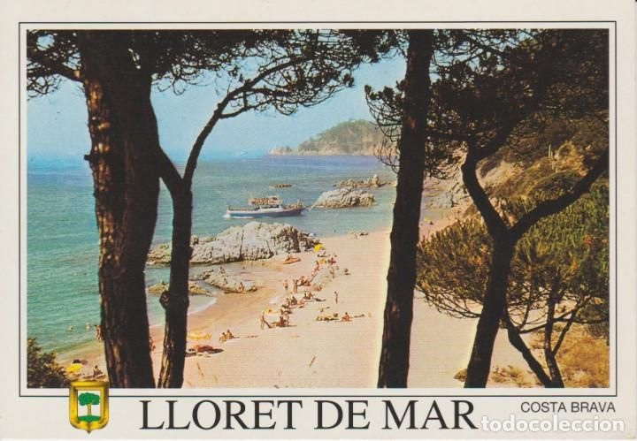
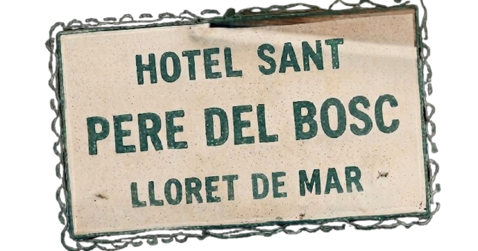

Our Wedding
in Lloret de Mar



Recuerdo la primera vez que vi a Robert entrar en el bar de Barcelona donde yo trabajaba como camarera. Yo estaba fumando (por entonces fumaba) y él era el último de los cuatro hombres que desfilaron hacia el bar. El primero era Ashley Scott, después John Dickinson, Martin Williams y, por último, Robert Daniel Brown.
«Qué chico tan guapo y tímido», pensé, ya que Robert me miró con esos ojos asustadizos que tiene y os juro que el tiempo se paralizó entonces. Puedo recrear perfectamente la imagen en mi cabeza: los pantalones cortos en marzo (tan guiri), el «hola» tan entusiasta de los británicos cuando aprenden una palabra extranjera y ¡una sonrisa brillante!
Entraron en el bar y les puse cuatro cervezas calientes (la nevera nunca funcionaba en ese bar). Y empecé a observar a aquellos cuatro individuos.
«Qué gente tan ruidosa», pensé. Menos el chico tímido, que se mantenía en silencio echando miraditas hacia mí.
Después de aquel día volvió otra vez. A pesar de la cerveza caliente, me comentó que se había comprado un piso cerca y que lo estaba reformando.
—I don't have a shower yet —me dijo, y yo no quise decirle que me había fijado.
Muchas cervezas calientes después y muchas conversaciones tras la barra, Robert me pidió una cita y yo le dije que no. (Yo soy una chica muy difícil).
Pero lo esperaba. Cada vez que él llegaba al bar y arrastraba a sus amigos a beber cervezas insípidas, a mí se me iluminaba la cara. Al enviarle tantas señales confusas, Robert volvió a intentarlo: envió a una amiga para invitarme a una excursión por Sitges. (Les dije que no, no por orgullo; creo que tenía algo importante en la universidad aquel día).
«¡A la tercera le digo que sí!», pensé, y esperé y esperé a que Robert me volviera a pedir salir. Pero no solo no volvió a pedirme salir, sino que dejó de ir al bar.
Yo, cada fin de semana, me ponía cada vez más guapa, con los labios más rojos y los vestidos más bonitos, pero él no volvía.
«Qué tonta soy. ¿Y si era el amor de mi vida?»
I remember the first time I saw Robert walk into the bar in Barcelona where I worked as a waitress. I was smoking (back then I smoked), and he was the last of four men who walked into the bar. First came Ashley Scott, then John Dickinson, Martin Williams, and finally Robert Daniel Brown.
“What a handsome and shy boy,” I thought, because Robert looked at me with those timid eyes of his, and I swear time stood still at that moment. I can perfectly recreate the image in my mind: shorts in March (such a foreigner thing to do), the enthusiastic “hello” that British people say when they learn a foreign word, and a brilliant smile!
They came into the bar, and I served them four warm beers (the fridge never worked in that bar). And I started observing those four individuals.
“What noisy people,” I thought. Except for the shy boy, who stayed quiet and kept stealing glances at me.
After that day, he came back again. Despite the warm beer, he told me he had bought an apartment nearby and was renovating it.
“I don't have a shower yet,” he said, and I didn't want to tell him that I had noticed.
Many warm beers and many conversations across the bar later, Robert asked me out on a date, and I said no. (I am a very difficult girl.)
But I waited for him. Every time he came into the bar and dragged his friends along to drink tasteless beers, my face would light up. After receiving so many mixed signals from me, Robert tried again: he sent a friend to invite me on a trip to Sitges. (I said no, not out of pride; I think I had something important at university that day.)
“The third time I'll say yes!” I thought, and I waited and waited for Robert to ask me out again. But not only did he never ask me out again, he stopped coming to the bar altogether.
Every weekend, I made myself look prettier and prettier, with redder lips and more beautiful dresses, but he never came back.
“How foolish I am. What if he was the love of my life?”